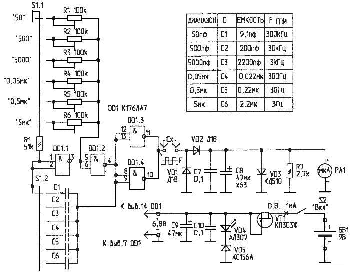

Измеритель емкости на микросхеме К176ЛА7

Рис. 1 - Схема прибора для измерения емкости
Основу измерителя составляет генератор прямоугольных импульсов (ГПИ), частота которого изменяется в соответствии с выбранным пределом измерений (3 Гц...300 кГц). Для уменьшения потребляемого тока, ГПИ выполнен на КМОП-микросхеме. Выходной сигнал ГПИ проходит через измеряемую емкость, выпрямляется и подается на стрелочный прибор РА1 с линейной шкалой (50 мкА). При этом значения измеренной емкости соответствуют шкале микроамперметра на всех поддиапазонах. На пределе "5 мкФ" стрелка измерителя колеблется возле требуемой отметки с частотой 3 Гц. Конечно, так мерить неудобно, но этот предел выбран как компромиссный (его можно исключить, так как емкости от 1 мкФ и выше обычно легко "прозваниваются" с помощью тестера). При измерениях же на этом под-диапазоне надо смириться с некоторой "колебательной" погрешностью.
Для того чтобы разряд батареи не влиял на точность измерений, применен простейший стабилизатор, состоящий из полевого транзистора, светодиода и стабилитрона. Светодиод, включенный в цепь стабилизатора, одновременно служит индикатором включения прибора и индикатором разряда батареи. Как только батарейка разрядится до значения 6,5...7 В, светодиод погаснет; и это будет означать, что пользоваться измерителем нельзя — будет большая ошибка в измерениях. Вследствие малого тока потребления, измеритель работает без замены батарейки долго. Диод, включенный параллельно микроамперметру, защищает головку при перегрузке.
Детали и конструкция
Плата для установки деталей выполнена простейшим способом — вырезанием опорных площадок резаком из обломка ножовочного полотна на кусочке фольгированного стеклотекстолита, а сами соединения выполнены проводом МГТФ. Здесь есть два замечания:
- Важно обеспечить малую емкость монтажа между клеммами для подключения измеряемой емкости. Для этого, в частности, плату размещают рядом с клеммами и соединяют с ними короткими, максимально удаленными друг от друга проводами. В моем варианте эта паразитная емкость получилась около 0,5 пФ, поэтому на пределе "50 пФ" без измеряемой емкости стрелка прибора отклоняется на 0,5 деления. Если к измерителю подключить емкость 1 пФ, показания будут 1,5 делений, и т.д.;
- Конденсаторы в ГПИ (особенно С1 и С2) для уменьшения емкости монтажа лучше припаять к самому переключателю.
Переключатель S1 — ПГ-2, конденсаторы в ГПИ — любые, но желательно — с малым ТКЕ. Светодиод VD4 нужно подобрать из имеющихся по наиболее яркому свечению при токе 1 мА. Переменные резисторы желательно проверить на отсутствие "шуршания". Настройка прибора очень проста. Нужно подобрать 6 конденсаторов (желательно, с отклонением емкости не более 1 ...2%), величины которых близки к максимальным значениям каждого поддиапазона измерений, например: 47 пФ; 470 пФ; 4700 пФ; 0,047 мкФ; 0,47 мкФ; 4,7 мкФ.
Далее включаем поочередно все пределы измерений, и регулировкой соответствующих переменных резисторов устанавливаем стрелку прибора на 47 делений. При достаточно большом запасе конденсаторов схему измерителя можно изменить и избавиться от переменных резисторов R1...R6. Вместо них между выводами 1,2 и 5, 6 DD1 включается один постоянный резистор сопротивлением 100 кОм. При этом настройка осуществляется подбором конденсаторов С1...С6 в ГПИ, которые можно составлять из нескольких. Это дополнительно исключит влияние нестабильности сопротивления переменных резисторов на качество измерений.
Для удобства измерений к прибору можно изготовить два щупа из провода МГТФ. При этом их взаимную емкость нужно учитывать и вычитать из измеренной (обычно 5...10 пФ).
Если потребляемый ток значительно больше 1 мА, нужно подобрать другой экземпляр полевого транзистора.
Параметры измерителя:
- Диапазон измеряемых емкостей - 5·106пФ
- Количество поддиапазонов - 6
- Напряжение питания - 9 В
- Потребляемый ток - 0,8...1 мА
- Погрешность измерений - 3...5%
- Габариты -130х70х50 мм